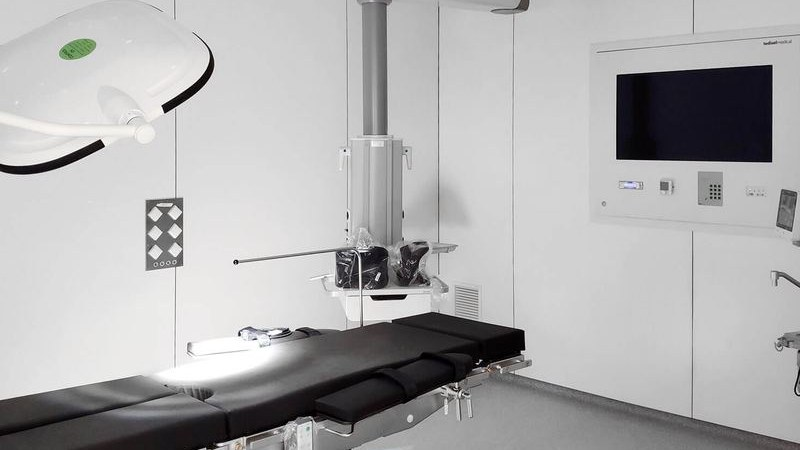

A clear guide to the common types of hernia, the warning signs to watch for and how modern keyhole repair works.
A hernia is a bulge that appears when an internal organ or tissue pushes through a weak spot in the muscle wall. It is one of the most common reasons adults see a general surgeon. Hernias rarely heal on their own, so knowing the signs and your options helps you act at the right time.
What is a hernia?
Your abdominal wall is made of layers of muscle and tissue. When a part of this wall becomes weak or stretched, a portion of the intestine or fatty tissue can push outward and form a soft lump under the skin. The lump may be more visible when you stand, cough or lift something and may disappear when you lie down.
Common types of hernia
The type depends on where the weakness is:
- Inguinal hernia: in the groin, the most common type, especially in men
- Umbilical hernia: near the navel
- Incisional hernia: at the site of an earlier abdominal operation
- Femoral hernia: in the upper thigh or groin area, more often seen in women
- Hiatus hernia: in the upper abdomen, where part of the stomach moves up towards the chest
Symptoms to look out for
Many hernias begin as a painless swelling. Over time you may notice:
- A visible bulge in the groin, abdomen or navel
- A dragging, heavy or aching feeling, worse at the end of the day
- Discomfort while bending, lifting or coughing
- Burning or pressure at the site of the swelling
Causes and risk factors
A hernia develops when pressure inside the abdomen is repeatedly higher than the strength of the muscle wall. Heavy lifting, chronic cough, long-standing constipation or straining while passing urine, obesity, pregnancy and previous abdominal surgery are common contributors. Age and family history also play a part.
How a hernia is diagnosed
Most hernias are diagnosed by a simple clinical examination, where the surgeon checks the swelling while you stand and cough. An ultrasound scan is advised when the diagnosis is not clear, when the hernia is small, or to look for related problems. The findings help your surgeon choose the most suitable repair for you.
Does every hernia need surgery?
A very small hernia without symptoms may sometimes be watched under medical guidance. However, a hernia does not close on its own and usually grows with time. Once a hernia causes pain or keeps enlarging, planned surgery is the recommended solution. Belts and supports may give temporary comfort but do not cure the problem.
Surgical options
Hernia repair closes the weak area and, in most cases, reinforces it with a surgical mesh to lower the chance of the hernia returning. The repair can be done in two main ways:
- Open repair: through a single incision directly over the hernia
- Laparoscopic (keyhole) repair: through a few tiny incisions using a camera and fine instruments
Keyhole surgery generally means smaller scars, less pain and a quicker return to routine, but the best option depends on the type and size of the hernia and your general health. Your surgeon will explain this after examining you.
Recovery after hernia surgery
Most patients walk on the same day and return to light activity within a few days. Heavy lifting and strenuous exercise should be avoided for the period your surgeon advises. Eat fibre-rich food and drink enough water to avoid straining, keep the wound clean and dry, and attend your follow-up visit.
When to seek urgent help
A hernia can become trapped, and the blood supply to the trapped tissue may be cut off. Go to a hospital immediately if you have sudden severe pain at the swelling, a hard and tender lump that cannot be pushed back, vomiting, fever or inability to pass gas or stools. This is a surgical emergency.
Can hernias be prevented?
Not always, but you can lower the risk. Maintain a healthy weight, lift heavy objects with your legs and not your back, treat chronic cough and constipation, and avoid smoking, which weakens tissues. Support the wound area when coughing after any abdominal surgery.
Conclusion
Hernias are common and highly treatable. Early assessment keeps the repair simple and avoids emergencies. If you notice a new lump or a dragging discomfort, book a consultation with our surgeon or message us on WhatsApp.